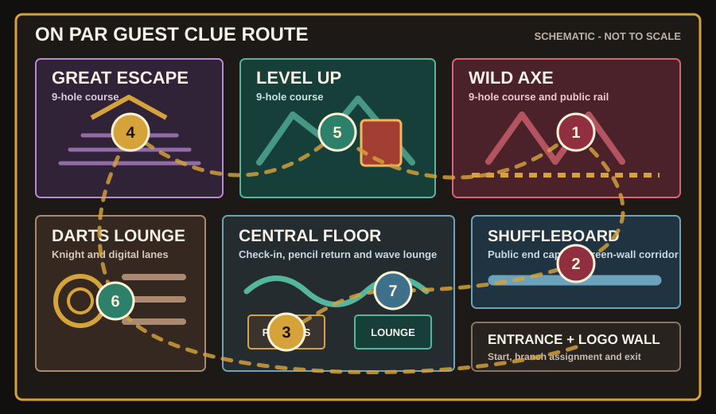

A two-hour, actor-free Halloween murder mystery built for On Par Entertainment. Guests enter a one-night costume fundraiser, investigate on their phones, move through posted QR scenes, inspect dramatic props, test routes, and build a final case.
12-80 guests in teams of 2-6.
1 event captain. No actors or roaming clue staff.
Host laptop, display screen, venue Wi-Fi, player phones.
Score points through clues, missions, and a correct final accusation.
On Par has become A Killer Halloween, a one-night costume fundraiser. Rex Mulligan, its loudest sponsor, is found dead beside Wild Axe Hole 7 after the lights dip. Wild Axe, Great Escape, and Level Up remain three separate nine-hole courses. Every team becomes a detective squad; the phone app is its case file and notebook, and selected public areas become the investigation.
Players scan the join code, form teams of 2-6, enter the virtual costume party, and watch Harry's opening film. It establishes Rex, the missing Golden Putter, and the 7:39 credential event.
The first two acts release four stations. Teams reconstruct the route, inspect the staged trophy, and learn that several costumed suspects are lying for reasons unrelated to murder.
The final two acts release Rex's cocktail-napkin route, Voucher 413, and Nina's restored Halloween clip. Earlier details gain new meanings when paired together.
Every station contains a narrated On Par character dramatization, a virtual statement, one physical observation, a deduction question, and an optional three-step hint ladder.
Teams submit culprit, weapon, motive, best evidence, and a closing argument. The app scores the four selections; the event captain chooses any bonus awards.
Players walk the building, compare what they can physically observe, gather around props, and debate evidence face to face.
Recorded scenes and character statements provide every required story beat. The captain only controls timing, scoring, and the reveal.
| Screen | What Players Do | Event Purpose |
|---|---|---|
| Join the Case | Enter detective name and team name. | Creates the team's live score, case file, and shared notes. |
| QR Station | Watch the scene, read the statement, inspect On Par, and deduce. | Replaces an actor while preserving physical investigation. |
| Clue Unlock | Tap the station button or enter codes such as TEEBOX. | Adds scored evidence to the team's case file. |
| Live Missions | Submit a route test, classification, reconstruction, or closing argument. | Rewards discussion and in-venue play. |
| Suspects | Compare public alibis with virtual recorded statements. | Separates a real secret from the murder itself. |
| Final Accusation | Pick culprit, weapon, motive, evidence, and closing argument. | Converts investigation into a scored solve. |
Start the server, print /station-kit, open /host, and keep /display on the TV for live team progress. Private notes never appear there. Let guests scan the join QR code, then advance acts from the host console.
| Time | Segment | Captain Action | Guest Play |
|---|---|---|---|
| 0:00-0:10 | The Invitation | Display join QR, assign Scarlet/Ivory routes, and explain boundaries. | Accept the invitation, watch the briefing, then open case files. |
| 0:10-0:35 | Blackout | Open Wild Axe Hole 7 and Back-Corridor Ledger stations. | Test the staged time and seven-minute route. |
| 0:35-1:00 | Costume Stories | Open Altered Guest Ledger and Golden Putter stations. | Separate costume-party secrets from useful evidence. |
| 1:00-1:25 | Haunted Ledger | Open Cocktail-Napkin Map and Voucher 413 stations. | Reverse the map's meaning and uncover the fundraiser money trail. |
| 1:25-1:45 | Final Fright | Open GREENBAG and final accusation forms. | Build means, motive, opportunity, and possession. |
| 1:45-2:00 | Reveal | Close answers, reveal solution, announce winners. | Hear the solution, compare theories, take team photos. |
"Detectives, your phones are your case files and On Par is your investigation. Each QR chapter gives you only part of the truth. Watch, inspect, and deduce before you unlock. Every suspect is hiding something, but not every secret is murder. Follow your Scarlet or Ivory starting order, stay in public areas, and be ready to accuse before the final reveal."
Advance on schedule even if a team misses a station. Previously opened chapters remain available, and the final 20 minutes should never be compressed below 15 minutes.
This guest-safe schematic follows recognizable sightlines in the December 2025 virtual tour. It is not an architectural floor plan; confirm the final freestanding-sign positions during event setup.

Blackout: 1 then 2. Costume Stories: 4 then 3. Haunted Ledger: 5 then 6. Final Fright: 7.
Blackout: 2 then 1. Costume Stories: 3 then 4. Haunted Ledger: 6 then 5. Final Fright: 7.
Alternate teams between Scarlet and Ivory as they join. Each act still gives every team the same two clues, but half the room approaches each station from the opposite direction. Stop 7 becomes the shared finish and reveal point.
Wild Axe, Great Escape, and Level Up are three separate nine-hole courses. QR cards remain outside active putting and axe-throwing lanes.
| Stop | Virtual-Tour Anchor | Exact Placement | Boundary |
|---|---|---|---|
| 1 | Wild Axe public rail | Freestanding sign under Wild Axe signage, beside the staged Hole 7 marker. | Outside every axe lane and putting surface. |
| 2 | Shuffleboard end cap | Public table end facing the green-wall corridor near the restrooms; use floor tape for the fictional route. | At least 6 ft from every real door. |
| 3 | Mini-golf pencil return | Separate tabletop easel beside the RETURN MINI-GOLF PENCILS HERE sign and putter rack. | Do not cover signage or equipment access. |
| 4 | Great Escape Egyptian entry | Locked trophy case on a narrow event table at the guest side of the Egyptian-column rail. | Outside all nine holes and clear of the entry opening. |
| 5 | Level Up overlook | Freestanding rail sign beside the LEVEL UP sign and red game-machine landmark. | Never attach to scenery or enter the course. |
| 6 | Darts lounge booth end | Replica voucher table beside the knight and numbered digital dart lanes. | Outside throwing lines; no real business records. |
| 7 | Central wave-mural lounge | Green-bag prop and final QR beside the TV/couch lounge, facing the open floor. | Keep the central aisle and couch access open. |
Open every QR code on a phone. Confirm the stop number, correct video, statement, task, act, and hint ladder.
A QR card never authorizes entry to an office, service hall, storage area, restroom doorway, axe lane, or putting lane.
Use weighted 8.5 x 11 inch tabletop frames or floor sign holders at chest-to-waist height. Keep at least 36 inches of clear passage beside every station and never tape directly to On Par finishes or operational signs.
Points to an observation the team may have skipped. It does not name a conclusion.
Names the comparison that matters, such as two times, two records, or two physical transfers.
Provides a fair-solve rescue by naming the clue pairing, while still requiring a final accusation.
| Stop | Use This Host Rescue Only If Needed |
|---|---|
| 1 - Wild Axe | "Is 7:42 the time of the crime, or only the time someone wanted detectives to read?" |
| 2 - Shuffleboard | "The shared badge proves a route. What later record could identify who used that opportunity?" |
| 3 - Check-in | "What does Bev gain by changing the raffle time, and does that place her near Wild Axe?" |
| 4 - Great Escape | "Who had access is not the same as who carried the trophy. What object can collect both dye and gold?" |
| 5 - Level Up | "Decide who drew the map before deciding whether it shows escape or investigation." |
| 6 - Darts | "Ignore the initials. What exact defect should never repeat in two genuine signatures?" |
| 7 - Wave lounge | "Match the bag checkout, office claim, voucher control, and display access to one suspect." |
Let teams struggle productively for 5-7 minutes before suggesting Hint 1. The station app reveals hints one at a time. Never announce Hint 3 room-wide unless more than half the teams are stalled on the same deduction.
By the end of The Haunted Ledger, a healthy room should understand that the Golden Putter is likely the weapon and Voucher 413 supplies the motive, while still debating the culprit. Stop 7 should confirm a chain, not introduce a surprise answer.
Costume party producer dressed as a tarot reader. Changed 7:30 to 7:40 to hide an unauthorized raffle entry. Her lie is real, but it does not place her at Wild Axe.
Mini-golf operations manager dressed as a carnival barker. Lent Lou the brass display key off-record and blurred the checkout mark to protect his job.
Event photographer dressed as an emerald witch. Deleted a staff-angle clip because she filmed where she should not. The restored image shows objects, not a face.
Facilities lead dressed as a gravekeeper. Postponed a repair and fears blame for the light dip. The OFFICE-2 scan is not his personal credential.
Vocalist and emcee dressed as a black widow. Hid an argument with Rex over a sponsor complaint and noticed a black-costumed figure returning.
Fundraiser accountant dressed as the phantom. Forged charity payouts and killed Rex after Rex traced Voucher 413 to the missing money.
Culprit: Lou Ledger. Weapon: the weighted Golden Putter trophy. Motive: hiding copied charity-voucher payouts. Best evidence: Voucher 413 with its duplicated approval mark and fresh gold flecks.
| Code | Evidence | What It Proves |
|---|---|---|
| TEEBOX | Darker 7:42; distant pencil; low gold smear. | The scene time may be staged and the weighted gold object crossed the rail. |
| CART7 | OFFICE-2 opens at 7:39 and 7:46; driver blank. | A seven-minute opportunity breaks an office-only alibi, but a shared badge is not identity. |
| SCORECARD | Bev changed 7:30 to 7:40. | A genuine red herring: a lie can protect a separate secret. |
| LOCKER | Borrowed key; green dye on hinge; weighted base. | Access and likely weapon, awaiting possession proof. |
| NAPKIN | Rex's handwriting maps office, display, and route. | The victim was tracing the money and trophy, not drawing an escape. |
| RECEIPT | Copied approval; fake payee; green-bag paper; gold flecks. | Lou's money motive and contact between the voucher, bag, and trophy. |
| GREENBAG | 7:45 bag, hidden badge, gold handle; bag checked out to Lou. | Possession joins the route, weapon, and forged payouts. |
The borrowed key, trophy weight, green hinge dye, and gold transfer identify the Golden Putter.
The OFFICE-2 gap and 7:45 clip contradict Lou's claim that he never left the office.
Voucher 413 proves a copied payout; Rex's map shows he had connected it to the route and display.
Fair-solve standard: Lou is the only suspect linked to all four categories. No single clue should be presented as a confession.
Rex Mulligan was found dead beside Wild Axe Hole 7 during On Par's A Killer Halloween. Your team must scan QR chapters, unlock clues, complete missions, and submit a final accusation before the killer reveal.
Assigned route: Scarlet / Ivory (circle one)
Culprit:
Weapon:
Motive:
Evidence:
Print one player handout per team if you want a physical fallback. The phone app remains the official scorekeeper.
The opening film appears immediately after each player joins; some phones may require one tap to start audio. All films use the supplied Harry - Articulate British Storyteller voice selection. Station films are about 25-29 seconds; the opener is about 81 seconds.
Test every QR code and video on the same network guests will use. Move the game forward every 20-25 minutes, approve missions promptly, and gather everyone at the final screen before revealing Lou.